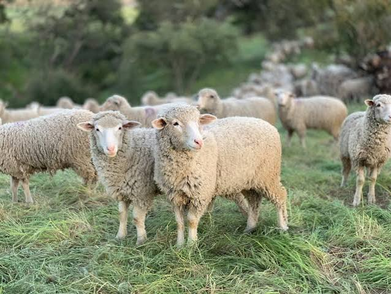
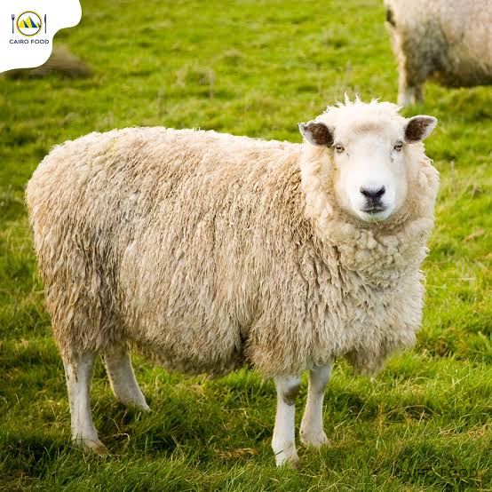
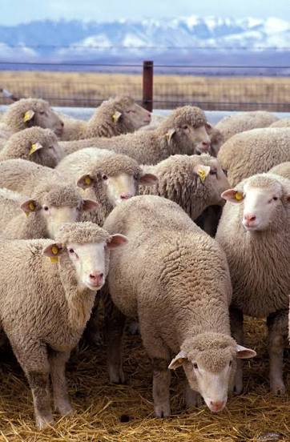
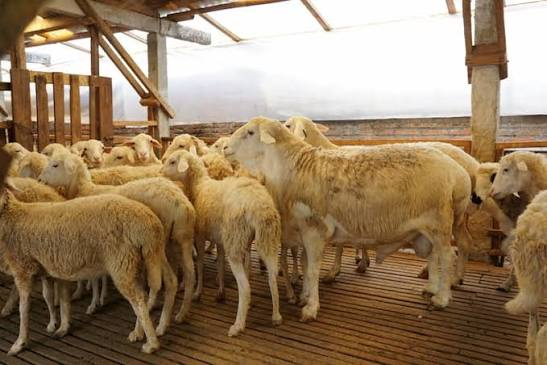
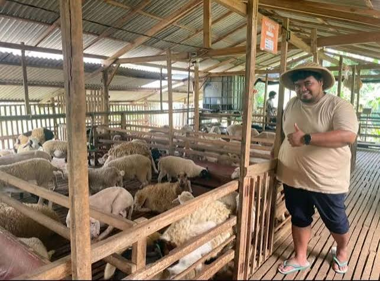

Cara Merawat Domba Agar Tetap Sehat dan Produktif
Langkah demi langkah menyusun jadwal vaksinasi, pembersihan kandang berkala, dan penanganan kuku ternak.
Dapatkan informasi terbaru, panduan teknis perawatan domba, analisa pakan silase, dan peluang kemitraan bisnis ternak.
Kupas tuntas kenaikan kurban 3,82%, potensi dam haji Rp30 miliar, surplus pasokan nasional 469.604 ekor, serta 5 strategi potong rantai tengkulak bagi peternak mandiri.

Tips PeternakanLangkah demi langkah menyusun jadwal vaksinasi, pembersihan kandang berkala, dan penanganan kuku ternak.
Analisa lonjakan permintaan kurban dan dam haji, surplus pasokan domba nasional, hingga strategi jual langsung tanpa perantara.

Edukasi RasMemilih jenis domba yang tepat untuk program fattening (penggemukan) vs breeding (pemuliaan bibit).

Pakan & NutrisiCara fermentasi rumput odot dan tebon jagung dengan probiotik untuk menekan FCR dan biaya pakan.

Tips PeternakanKetinggian kolong kandang, jarak celah lantai kayu, dan saluran pemisah urin serta kotoran padat.

Info UsahaMengapa domba pakan silase menghasilkan tekstur daging juicy tanpa aroma prengus menyengat.